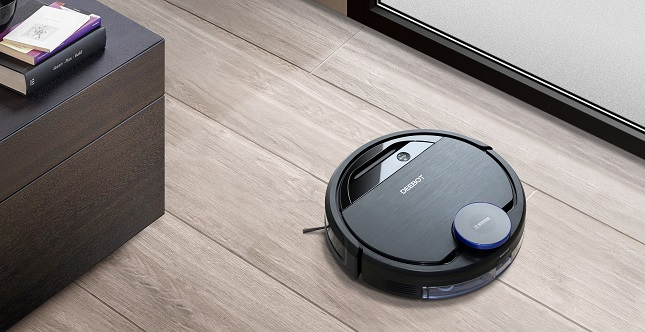

A smart Deebot refers to a robotic vacuum cleaner that incorporates advanced technologies for efficient and
convenient cleaning of floors. Here are some features commonly found in smart Deebot models:
Navigation & Mapping:
Utilizes advanced navigation systems such as laser mapping or camera-based navigation to efficiently
navigate and clean various floor surfaces.
Creates maps of the cleaning area to plan optimal cleaning routes and avoid obstacles.
App Control & Remote Monitoring:
Connects to a smartphone app, allowing users to start, stop, schedule, and monitor cleaning sessions
from anywhere.
Provides real-time status updates, cleaning reports, and notifications.
Multi-Floor Mapping & Zone Cleaning:
Capable of mapping and remembering multiple floors in a home for efficient cleaning across different
levels.
Allows users to define cleaning zones or no-go zones within the app to target specific areas or avoid
sensitive areas.
Obstacle Detection & Avoidance:
Equipped with sensors to detect obstacles such as furniture, walls, and stairs to avoid collisions and
falls.
Uses advanced algorithms to navigate around obstacles and adjust cleaning paths accordingly.
Maintenance Alerts & Self-Cleaning:
Alerts users when maintenance tasks such as emptying the dustbin or cleaning the brushes are required.
Some models may feature self-emptying dustbins or self-cleaning brushes for added convenience.
Scheduled Cleaning & Quiet Mode:
Allows users to schedule cleaning sessions at specific times or days according to their preferences.
Offers a quiet mode for discreet cleaning, especially during nighttime or when working from home
Recharge & Resume:
Automatically returns to the charging dock when the battery is low to recharge.
Resumes cleaning from where it left off after recharging, ensuring complete coverage of the cleaning
area.
Overall, a smart Deebot offers hands-free cleaning convenience, efficient navigation,
and integration with smart home ecosystems for enhanced automation and control.
Back To Home...